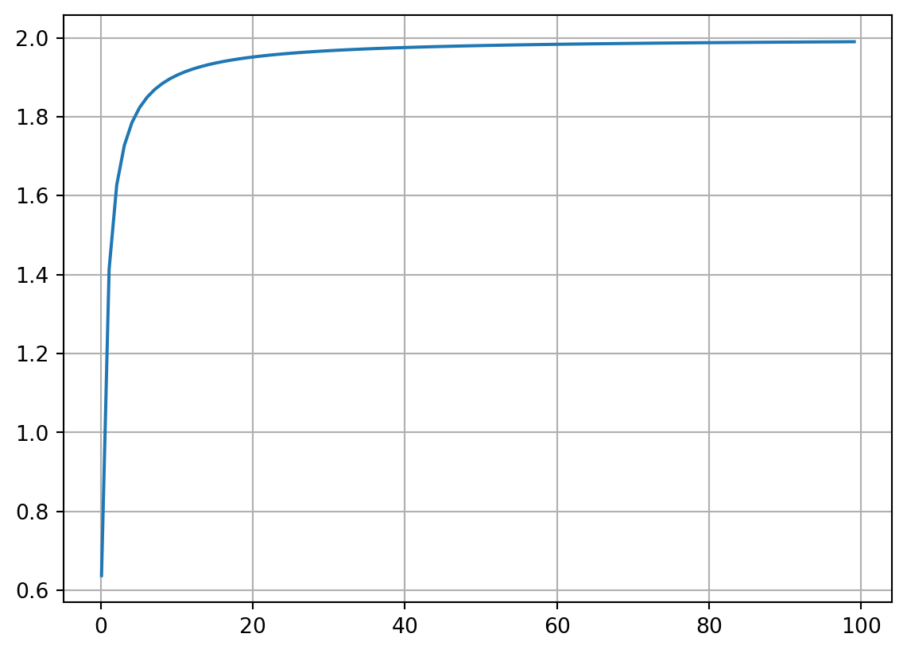
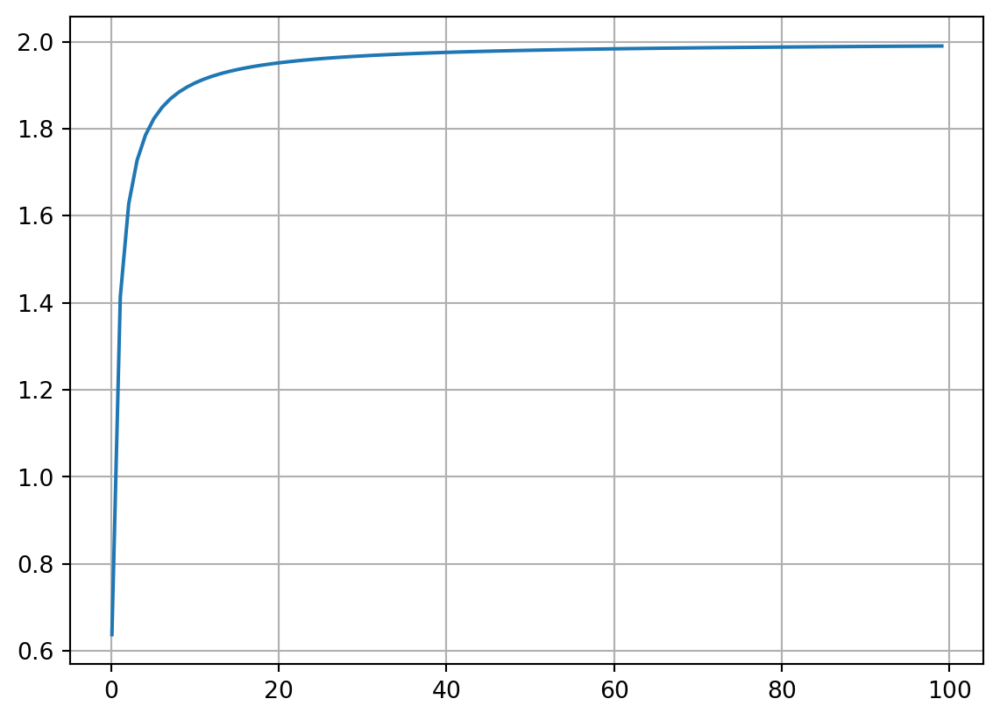
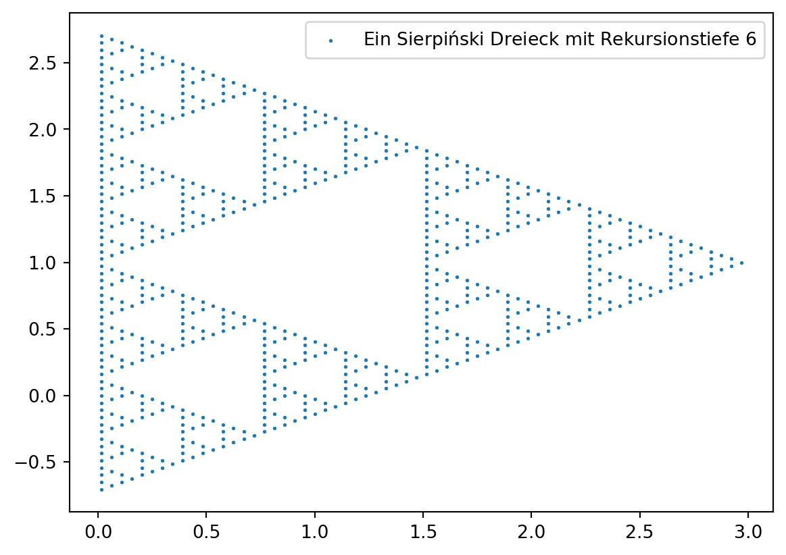
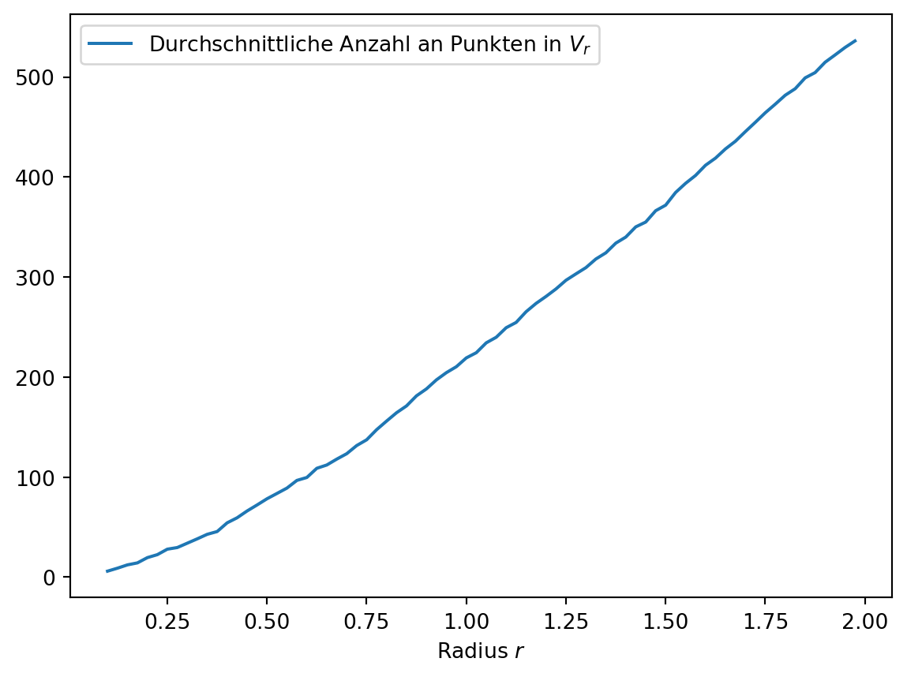

import numpy as np
import matplotlib.pyplot as plt
V = lambda r: 2*r**2+2*r+1
Delta = lambda r: (np.log(V(r+1))-np.log(V(r)))/(np.log(r+1)-np.log(r))
xn = np.arange(0.1, 100,1)
fig, ax = plt.subplots()
ax.plot(xn, Delta(xn))
ax.grid()
plt.show()
A few days ago, I stumbled upon an article titled Finally We May Have a Path to the Fundamental Theory of Physics… and It’s Beautiful by Stephen Wolfram, an American scientist and the creator of WolframAlpha. His article discusses his new theory in physics, which is based on directed graphs and their transformations under specific rules. For more detailed information, here is the full version: www.wolframphysics.org/technical-introduction/.
His theory notably constructs mathematical spaces from these graphs, essentially nodes interconnected with each other.
This raises the question of what this theory can reveal about the dimensionality of spaces. Much on this topic can be read in the article. In summary, using these graphs, the dimension of a space can be generalized. This generalization can then be extended to other mathematical objects, allowing for an expanded concept of dimension. This enables discussions about “2.5”-dimensional spaces or even “\(\pi\)”-dimensional spaces. Importantly, we’re not limited to classical vector spaces made up of tuples (e.g., \(\mathbb{R}^3\)); any set equipped with a metric can be used as our space.
The intriguing aspect here is that this new concept of dimension depends solely on a set and a metric defined on it, but a purely topological space doesn’t seem to suffice.
Initially, translating this concept to metric spaces was quite complex for me. However, in the end, the formulas were essentially the same. I made it unnecessarily complicated for myself by conducting my own research:
Meine Ideen zum Dimensionsbegriff
Consider the following graphs:


Both demonstrate how spheres spread in a lattice. According to Wolfram, this is formed by: “Start at some point in the hypergraph. Then follow \(r\) hyperedges in all possible ways. You’ve effectively made the analog of a ‘spherical ball’ in the hypergraph.”1
For any graph, one can choose a point and count how many points are reachable within \(r\) steps or fewer. If this spread resembles that of a polynomial, the degree can determine the dimension. However, determining the exact dimension is not trivial and is explained more thoroughly2 3 in Chapter 4.6 of the Wolfram Physics Project4.
The following considers a version developed by me, which is inspired by the original.
Let \((M,d)\) be a metric space.
\(M\) is the set. \(d: M\times M \rightarrow \mathbb{R}_{\ge 0}\) is a metric. Let \(V_{r,x} = |{y \in M \mid d(x,y) \le r}|\) be the number of points in a ball with radius \(r\).
Let \(\Delta_{r,x} = \frac{\log(V_{r+1,x})-\log(V_{r,x})}{\log(r+1)-\log(r)} = \frac{\log\frac{V_{r+1,x}}{V_{r,x}}}{\log{\frac{r+1}{r}}}\).
Now, the following applies:
\[ \text{dim}(M,d) = \begin{cases} \lim_{r\rightarrow \infty}\Delta_{r,x} & \text{if}\> |M|\ge\infty \wedge |V_{r,x}|<\infty\\\\\\\\ \lim_{r\rightarrow \infty}\Delta_{r,x} & \text{(?) if}\> |M|\ge\infty \wedge |V_{r,x}|\ge\infty\\\\\\\\ \begin{gather} v\in\mathbb{R}_{\ge 0} \text{ with } \\\\\\\\ |\{\Delta_{v\pm\epsilon,x}\}| = \max |\{\Delta_{w\pm\epsilon,x}\}|\\\\\\\\ \forall \epsilon,w\in\mathbb{R}_{\ge 0} \end{gather} & \text{if}\> |M|<\infty \end{cases} \]
\[ \begin{aligned} M & = \mathbb{Z}^2 \\\\\\\\ d(x,y) & = |x_1+y_1 + x_2+y_2| \\\\\\\\ V_{r,x}& = 2r^2+2r+1 \quad\forall x\in M\\\\\\\\ \Delta_{r,x} &= \frac{\log{\left(2 r + 2 \left(r + 1\right)^{2} + 3 \right)} - \log{\left(2 r^{2} + 2 r + 1 \right)}}{- \log{\left(r \right)} + \log{\left(r + 1 \right)}} \\\\\\\\ \lim_{r\rightarrow\infty}\Delta_{r,x} &= 2 \end{aligned} \]
import numpy as np
import matplotlib.pyplot as plt
V = lambda r: 2*r**2+2*r+1
Delta = lambda r: (np.log(V(r+1))-np.log(V(r)))/(np.log(r+1)-np.log(r))
xn = np.arange(0.1, 100,1)
fig, ax = plt.subplots()
ax.plot(xn, Delta(xn))
ax.grid()
plt.show()
\[ \begin{aligned} M & = \mathbb{Z}^2 \\\\\\\\ d(x,y) & = |x_1+y_1 + x_2+y_2| \\\\\\\\ V_{r,x}& = 2r^2+2r+1 \quad\forall x\in M\\\\\\\\ \Delta_{r,x} &= \frac{\log{\left(2 r + 2 \left(r + 1\right)^{2} + 3 \right)} - \log{\left(2 r^{2} + 2 r + 1 \right)}}{- \log{\left(r \right)} + \log{\left(r + 1 \right)}} \\\\\\\\ \lim_{r\rightarrow\infty}\Delta_{r,x} &= 2 \end{aligned} \]
import numpy as np
import matplotlib.pyplot as plt
V = lambda r: 2*r**2+2*r+1
Delta = lambda r: (np.log(V(r+1))-np.log(V(r)))/(np.log(r+1)-np.log(r))
xn = np.arange(0.1, 100,1)
fig, ax = plt.subplots()
ax.plot(xn, Delta(xn))
ax.grid()
plt.show()
The Sierpiński-Triangle is a fractal with a dimension of \(\log(3)/\log(2)\). The following code calculates the dimension of the Sierpiński-Triangle.
import matplotlib.pyplot as plt
import numpy as np
sirp = lambda x: [[],[],[]] if x==[] else [ sirp(v) for v in x]
repeat = lambda f,x,n: f(x) if n==1 else f(repeat(f,x,n-1))
points = []
start = np.array([1,1])
angle = 2*np.pi/3 # Winkel zwischen Punkten
length = 1 # Anfangslänge eines Punktes zum nächsten
decay = 0.5 # Koeffizient, mit dem bei jeder Iterationstiefe die Länge zwischen Punkten sinkt
def calc(data, current_point=start, length=length):
if len(data)==0:
points.append(current_point)
for i in range(len(data)):
newpoint = current_point+np.array([
length * np.cos(angle * i),
length * np.sin(angle * i),
])
calc(data[i], newpoint, length*decay)
# Sierpiński Dreieck mit Rekursionstiefe rt
rt = 6
data = repeat(sirp, [], rt)
calc(data)
# Zeichnen
x, y = np.array(points).T
fig, ax = plt.subplots()
ax.scatter(x, y, s=1)
plt.legend(['Ein Sierpiński Dreieck mit Rekursionstiefe $'+str(rt)+'$'])
plt.show()
rn = np.arange(0.1,2,0.025)
d = np.hypot
U = lambda r,p: [ q for q in points if d(*(p-q))<=r ]
V = lambda r,p: len(U(r,p))
def avg(r):
"""berechne die durchschnittliche Anzahl an Punkten in einer r großen Umgebung
"""
total = 0
for p in points:
total += V(r,p)
total /= len(points)
return total
val = [avg(r) for r in rn]
fig, ax = plt.subplots()
ax.plot(rn, val)
plt.xlabel('Radius $r$')
plt.legend(['Durchschnittliche Anzahl an Punkten in $V_r$'])
plt.show()
dn = [rn[i] for i in range(1,len(rn)-1)]
Delta = lambda i: (np.log(val[i+1])-np.log(val[i]))/(np.log(rn[i+1])-np.log(rn[i]))
dval = [Delta(i) for i in range(len(dn))]
fig, ax = plt.subplots()
ax.plot(dn, dval)
ax.plot(dn, [np.log2(3) for _ in dn], '.:')
plt.xlabel('Radius $r$')
plt.ylabel('$\Delta_r$')
plt.legend(['Durchschnittliches $\Delta_r$', 'Hausdorff Dimension von Sierpiński-Dreieck$\approx\log_2(3)$'])<matplotlib.legend.Legend at 0x7fff2dddc650>Error in callback <function _draw_all_if_interactive at 0x7fffcf4d8180> (for post_execute), with arguments args (),kwargs {}:ValueError:
Hausdorff Dimension von Sierpiński-Dreieck$pprox\log_2(3)$
^
ParseException: Expected end of text, found '$' (at char 42), (line:1, col:43)ValueError:
Hausdorff Dimension von Sierpiński-Dreieck$pprox\log_2(3)$
^
ParseException: Expected end of text, found '$' (at char 42), (line:1, col:43)<Figure size 672x480 with 1 Axes>